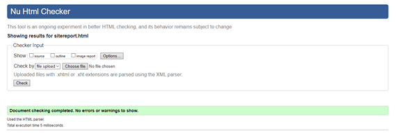
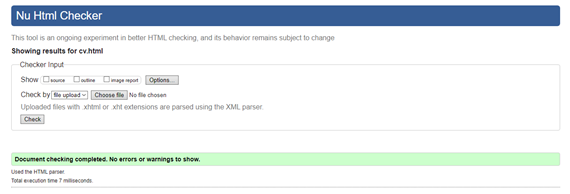
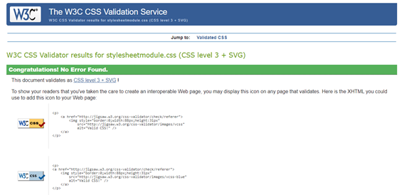
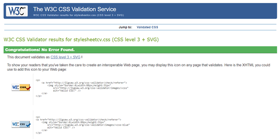
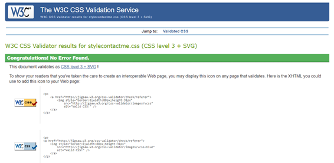

Site Report
My experience in web development, I would say it is very basic from my college days. Even though I have created a website before, this assignment extended my knowledge on HTML and CSS. In the creation of this website, I had many different ideas, but I had to stick to the assignment criteria. Five web pages had to be created, but the way I created my website, I made it in such a way that image holder for the modules. Would be on the home page and when clicked on it. It would redirect the user to the portfolio page, where a brief detail of the modules would be. It was just an extra to the assignment. The idea which would be the website layout and colour scheme was kind based on the logo. The logo was made with a particular colour scheme, so I just had to stick with the same colour. When creating the navigation bar, I had a bit of difficulty the links were not spaced out equally but with help of lecture video I was able to sort it out. I had get used to using a new feature called GitHub, making commit and a branch. When it came to the CSS, sometimes I had to use try and error to make it work.
HTML Validations
Index (Home) Page Validation
Portfolio Page Validation

Site Report Page Validation

CV Page Validation
Contact Page Validation
CSS Validations
Main style sheet Validation

Style sheet for Modules Page

Style sheet for the CV Page

Style sheet for Contact Page
Mobile CSS Validation